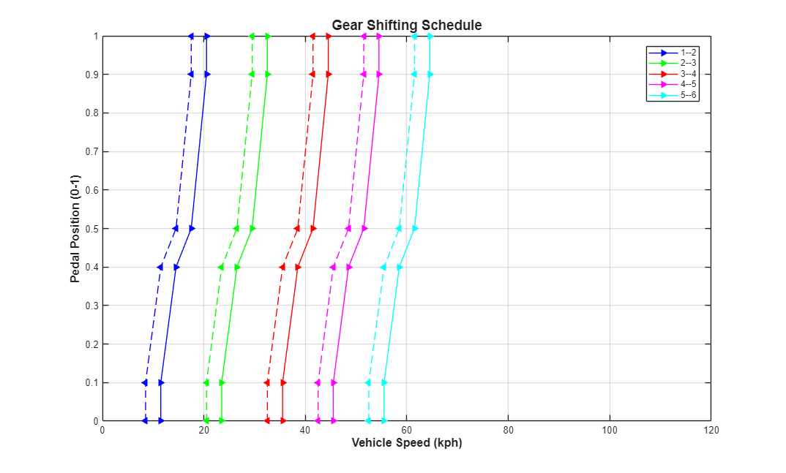
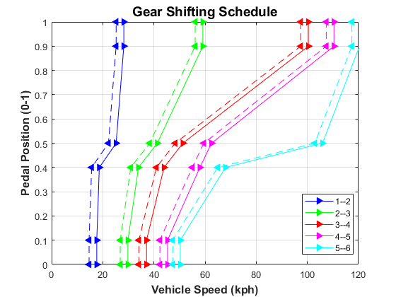

Dual Clutch Transmission - Optimization, 20 Parameters, patternsearch, Parallel Computing
This example shows a vehicle with a five-speed automatic dual-clutch transmission. The transmission controller converts the pedal deflection into a demanded torque. This demanded torque is then passed to the engine management. The pedal deflection and the vehicle speed are also used by the transmission controller to determine when the gear shifts should occur. Gear shifts are implemented via the two clutches, one clutch pressure being ramped up as the other clutch pressure is ramped down. Gear pre-selection via dog clutches ensures that the correct gear is fully selected before the on-going clutch is enabled.
The script below uses an optimization algorithm to find shift map that maximizes fuel economy. The shift map is parameterized with 20 parameters. The tests are run in parallel to accelerate the optimization.
Contents
Setup Optimization
Setup model
### Searching for referenced models in model 'Dual_Clutch_Trans'. ### Total of 1 models to build.
Run optimization using parallel computing
Starting parallel pool (parpool) using the 'Processes' profile ...
Connected to parallel pool with 4 workers.
Iter Func-count f(x) MeshSize Method
0 1 0.341992 0.05
1 47 0.341934 0.1 Successful Poll
2 93 0.341831 0.2 Successful Poll
3 139 0.341457 0.4 Successful Poll
4 185 0.340873 0.8 Successful Poll
5 231 0.339466 1.6 Successful Poll
6 277 0.336684 3.2 Successful Poll
7 305 0.333876 6.4 Successful Poll
8 320 0.33174 12.8 Successful Poll
9 333 0.330613 25.6 Successful Poll
10 344 0.330455 51.2 Successful Poll
11 351 0.33029 102.4 Successful Poll
12 351 0.33029 51.2 Refine Mesh
13 360 0.33029 25.6 Refine Mesh
14 379 0.329935 51.2 Successful Poll
15 385 0.329935 25.6 Refine Mesh
16 403 0.329935 12.8 Refine Mesh
17 430 0.329346 25.6 Successful Poll
18 448 0.329346 12.8 Refine Mesh
19 477 0.329296 25.6 Successful Poll
20 492 0.329296 12.8 Refine Mesh
21 520 0.329255 25.6 Successful Poll
22 536 0.329245 51.2 Successful Poll
23 538 0.329245 25.6 Refine Mesh
24 544 0.329245 12.8 Refine Mesh
25 557 0.32924 25.6 Successful Poll
26 563 0.32924 12.8 Refine Mesh
27 586 0.329078 25.6 Successful Poll
28 590 0.329078 12.8 Refine Mesh
29 604 0.329078 6.4 Refine Mesh
30 629 0.328693 12.8 Successful Poll
Iter Func-count f(x) MeshSize Method
31 640 0.328693 6.4 Refine Mesh
32 662 0.328685 12.8 Successful Poll
33 673 0.328685 6.4 Refine Mesh
34 698 0.328669 12.8 Successful Poll
35 709 0.328669 6.4 Refine Mesh
36 731 0.328663 12.8 Successful Poll
37 742 0.328663 6.4 Refine Mesh
38 767 0.328663 3.2 Refine Mesh
39 800 0.328573 6.4 Successful Poll
40 834 0.327909 12.8 Successful Poll
41 852 0.327891 25.6 Successful Poll
42 854 0.327891 12.8 Refine Mesh
43 862 0.327891 6.4 Refine Mesh
44 886 0.327891 3.2 Refine Mesh
45 914 0.32788 6.4 Successful Poll
46 934 0.32761 12.8 Successful Poll
47 947 0.32761 6.4 Refine Mesh
48 976 0.327523 12.8 Successful Poll
49 984 0.327523 6.4 Refine Mesh
50 1010 0.327523 3.2 Refine Mesh
51 1044 0.327419 6.4 Successful Poll
52 1070 0.32732 12.8 Successful Poll
53 1081 0.32732 6.4 Refine Mesh
54 1103 0.327267 12.8 Successful Poll
55 1111 0.327267 6.4 Refine Mesh
56 1122 0.327267 3.2 Refine Mesh
57 1139 0.327235 6.4 Successful Poll
58 1150 0.327235 3.2 Refine Mesh
59 1166 0.327147 6.4 Successful Poll
60 1182 0.327147 3.2 Refine Mesh
Iter Func-count f(x) MeshSize Method
61 1212 0.327147 1.6 Refine Mesh
62 1253 0.327095 3.2 Successful Poll
63 1283 0.327048 6.4 Successful Poll
64 1298 0.327048 3.2 Refine Mesh
65 1329 0.327048 1.6 Refine Mesh
66 1369 0.327039 3.2 Successful Poll
67 1400 0.327039 1.6 Refine Mesh
68 1440 0.327039 0.8 Refine Mesh
69 1484 0.327039 0.4 Refine Mesh
70 1529 0.32703 0.8 Successful Poll
71 1573 0.32703 0.4 Refine Mesh
72 1618 0.327026 0.8 Successful Poll
73 1665 0.327006 1.6 Successful Poll
74 1708 0.327006 0.8 Refine Mesh
75 1755 0.327006 0.4 Refine Mesh
76 1802 0.327005 0.8 Successful Poll
77 1849 0.327005 0.4 Refine Mesh
78 1896 0.327004 0.8 Successful Poll
79 1943 0.326984 1.6 Successful Poll
80 1986 0.326968 3.2 Successful Poll
81 2018 0.326968 1.6 Refine Mesh
82 2060 0.326968 0.8 Refine Mesh
83 2107 0.326968 0.4 Refine Mesh
84 2154 0.326966 0.8 Successful Poll
85 2201 0.326966 0.4 Refine Mesh
86 2248 0.326961 0.8 Successful Poll
87 2295 0.326961 0.4 Refine Mesh
88 2342 0.326961 0.2 Refine Mesh
89 2389 0.326961 0.4 Successful Poll
90 2436 0.326961 0.2 Refine Mesh
Iter Func-count f(x) MeshSize Method
91 2483 0.326961 0.4 Successful Poll
92 2530 0.326961 0.2 Refine Mesh
93 2577 0.326961 0.1 Refine Mesh
94 2624 0.32696 0.2 Successful Poll
95 2671 0.32696 0.4 Successful Poll
96 2718 0.32696 0.2 Refine Mesh
97 2765 0.32696 0.4 Successful Poll
98 2812 0.32696 0.2 Refine Mesh
99 2859 0.32696 0.4 Successful Poll
100 2906 0.32696 0.2 Refine Mesh
101 2953 0.326959 0.4 Successful Poll
102 2999 0.326959 0.2 Refine Mesh
103 3046 0.326958 0.4 Successful Poll
104 3091 0.326958 0.2 Refine Mesh
105 3138 0.326958 0.4 Successful Poll
106 3173 0.326958 0.2 Refine Mesh
107 3215 0.326958 0.1 Refine Mesh
108 3259 0.326958 0.2 Successful Poll
109 3300 0.326958 0.1 Refine Mesh
110 3344 0.326958 0.05 Refine Mesh
111 3388 0.326958 0.025 Refine Mesh
112 3433 0.326952 0.05 Successful Poll
113 3477 0.326952 0.025 Refine Mesh
114 3522 0.326952 0.05 Successful Poll
115 3567 0.326952 0.025 Refine Mesh
116 3613 0.326952 0.05 Successful Poll
117 3657 0.326952 0.025 Refine Mesh
118 3701 0.326952 0.0125 Refine Mesh
119 3747 0.326952 0.025 Successful Poll
120 3791 0.326951 0.05 Successful Poll
Iter Func-count f(x) MeshSize Method
121 3835 0.326951 0.025 Refine Mesh
122 3880 0.326951 0.0125 Refine Mesh
123 3926 0.326951 0.025 Successful Poll
124 3970 0.326951 0.0125 Refine Mesh
125 4014 0.326951 0.00625 Refine Mesh
126 4060 0.326951 0.0125 Successful Poll
127 4109 0.326951 0.00625 Refine Mesh
128 4158 0.326951 0.003125 Refine Mesh
129 4207 0.326951 0.001563 Refine Mesh
patternsearch stopped because the mesh size was less than options.MeshTolerance.
Elapsed Sim Time = 5541.0535
Parallel pool using the 'Processes' profile is shutting down.
